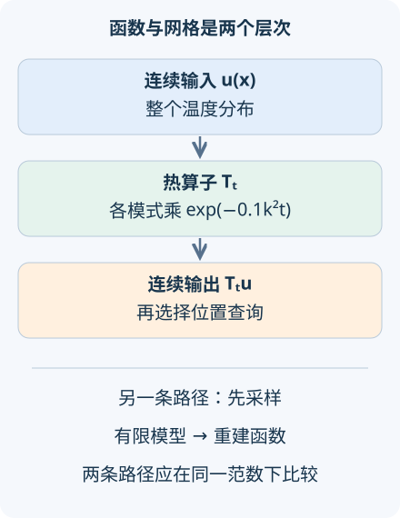

AI 研究 01 · 算子学习：学习的对象是一整个函数
问题：见过一些初始温度，能否预测一条从未见过的温度曲线的未来？先修：神经网络、傅里叶级数与热方程。本讲开启“科学机器学习”四讲路线。资料核查截至 2026-09-08；实验使用解析热算子，区分理论对象、有限表示与实际训练。
1. 一张曲线不是一个固定长度的向量
普通回归可能输入三个数字，输出一个价格。求解热传导时，输入是每个位置的初温，输出是稍后每个位置的温度。把金属环切成十段还是一百段，物理问题没有变，记录的数据长度却变了。这提示我们：先在连续层面定义任务，再选择计算表示。
设空间为周期区间 \([0,2\pi]\)，位置和时间已经无量纲化。令 \(L^2_{\rm per}\) 表示平方可积的周期函数空间，其归一化范数为
“算子”是从函数到函数的映射。本讲研究 \(T_t:u_0\mapsto u(\cdot,t)\)，其中 \(\partial_tu=\kappa\partial_{xx}u\)，\(\kappa=0.1\)，边界周期衔接。模型要学习的是一族输入函数对应的输出，并非只拟合某一个初值问题的解曲面。

2. 从微分方程推出一个可检查的真值
把初值展开成傅里叶模式 \(u_0(x)=\sum_k c_ke^{ikx}\)。因为 \(\partial_{xx}e^{ikx}=-k^2e^{ikx}\)，每个系数满足独立的微分方程
这一步说明扩散为什么优先抹平细纹：频率翻倍，衰减指数中的系数变成四倍。常数模式不衰减，所以平均温度守恒。对于一般平方可积初值，上式可在该函数空间中理解；这里无需假定初始曲线处处二阶可导。
令 \(u_0=\sin x+b\sin(kx)\)，取整数 \(k\ge2\)，则
不同整数正弦的内积为零，每个正弦的平方范数为 \(1/2\)。若近似模型只能输出第一项，它的误差恰好是
这不是神经网络训练的收敛定理，而是一个已知表达限制的精确代价。时间增大后误差下降，可能只是任务变得更平滑；不能据此声称模型懂得了被丢弃的高频。
3. 神经算子怎样表示这种映射
一种有限展开写法是 \(\widehat T(u)(x)=\sum_{j=1}^p B_j(u)\tau_j(x)\)。\(B_j\) 根据整个输入产生系数，\(\tau_j\) 是输出位置上的基函数。DeepONet，首稿 2019-10-08用分支网络处理传感器读数，用主干网络处理查询坐标，从而构成此类表示。查询位置可以改变，输入传感器的信息上限却仍然存在。
例如，有限传感器位置为 \(x_1,\ldots,x_m\)。总能找到非零连续函数 \(h\) 在这些点全为零。于是 \(u\) 与 \(u+h\) 给分支网络完全相同的输入，却可能有不同的目标输出。任何确定模型都无法在这个观察条件下把两者同时预测正确。增加网络宽度不能修复信息不可辨识；需要更丰富的采样或限制允许的输入函数类。
另一类模型直接学习积分核，形如 \((Kv)(x)=\int k_\theta(x,y)v(y)dy\)，再与点态映射和非线性复合。它把“邻居如何影响当前位置”定义在空间上。Neural Operator，首稿 2021-08-19，修订 2024-05-02系统讨论函数空间之间的学习与离散化。实际积分仍需数值求积，核表示也有有限容量。
4. 跨网格需要什么额外证据
记 \(P_N\) 为采样，\(I_N\) 为重建，\(G_{\theta,N}\) 为网格实现。希望控制的是
而不是两个长度不同的数组直接相减。它混合了采样误差、求积或重建误差、模型逼近误差和训练误差。公平实验要固定物理区域、单位、边界条件与输入分布，再改变网格；不同分辨率上的误差需要统一积分权重。
还有一个函数空间细节：一般 \(L^2\) 元素只按“几乎处处相同”识别，点值并非天然定义。使用点传感器时，应限制到具有足够正则性的函数类，或把读数定义成小区域平均。这个条件常被“函数就是数组”的写法遮住，却决定采样问题是否有数学意义。
Principled Approaches，首稿 2025-06-12推进的是如何原则性地把神经架构扩展到函数空间。阅读这类近期工作时，应追问采用什么测度、拓扑、离散化及一致性条件，而非仅把“分辨率无关”当成性能保证。热算子的线性、收缩性与半群关系 \(T_{s+t}=T_sT_t\) 还提供了训练外的结构检查；通过其中一个也不等于全部成立。
5. 先预测，再改动高频
还可以把训练数据组织成明确的函数分布：例如随机抽取有限个傅里叶系数，再用同一高精度求解器生成标签。划分训练与测试时要按完整初值函数划分，不能把同一条函数上的不同位置分到两边，随后声称见到了全新的函数。若测试高频范围超出训练范围，应单独标作分布外测试。对计算成本也应同时记录生成训练标签的费用与预测时费用；大量训练换来快速重复求解，只有在预期查询次数足够多时才可能值得。算子学习因此适合反复求解的一族问题，而不是无须定义输入分布的万能求解按钮。
默认 \(t=1,k=4,b=1\)：高频衰减因子 \(e^{-1.6}=0.201897\)，误差为 \(0.142762\)；输入平方范数为 1，输出为 \(0.429746\)。先把时间调为零：热过程尚未发生，近似却已经丢失高频。再固定时间提高波数，观察“更细的结构”为什么可能反而带来更小的输出误差。
6. 迁移练习
题一：模型在两个初值上都很准，是否因此满足叠加原理？设计一个检查。
展开答案
分别计算模型在 \(u,v,u+v\) 上的输出，检查 \(\widehat T(u+v)-\widehat T(u)-\widehat T(v)\)。对线性热方程真值为零，非线性网络未必如此。有限测试只能发现违反，不能证明对所有函数成立；含温度相关系数的真实方程本来也可能非线性。
题二：把同一十个温度读数插值成一千个点，能否等同于一千个独立传感器？
展开答案
不能。插值使用假设补齐表示，信息仍来自十个读数；在十个点均为零的扰动仍不可区分。应分别改变真实传感器数和输出查询数，并用高分辨率独立真值测量重建误差。
速查摘要
| 对象 | 关键式与边界 |
|---|---|
| 热解算子 | \(T_te^{ikx}=e^{-0.1k^2t}e^{ikx}\)，周期边界 |
| 舍弃高频 | \(\mathrm{RMSE}=\lvert b\rvert e^{-0.1k^2t}/\sqrt2\) |
| 跨网格 | 比较 \(I_NG_{\theta,N}P_Nu\) 与同一个连续真值 |
来源：DeepONet、神经算子理论、2025 函数空间架构。先修：神经网络；下一讲：傅里叶算子与混叠。